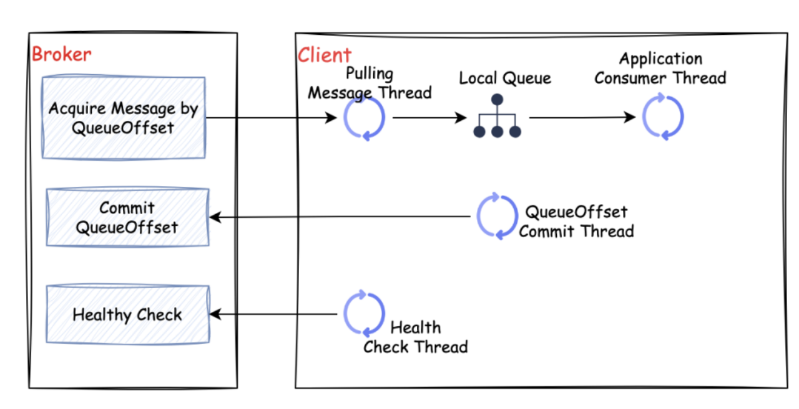

Client Design #
When designing the client, following the principles of simplicity and efficiency, I have integrated producers and consumers into the same client. This way, external users only need one client to interact with the Broker.
1. Consumer Design #

In the diagram, “Broker” represents the CatMQ server module, and “Consumer” represents the client’s consumer module.
Let’s briefly introduce the implementation principle of CatMQ’s consumer side:
-
Pull Consumer Thread: Based on the message offset (QueueOffset, the current consumption position of the consumer), messages are pulled from the Broker to the local consumption queue.
-
Application Consumer Thread: Messages are pulled from the local consumption queue for processing.
-
Offset Submission Thread: Periodically submits the current consumption information to the Broker.
-
Heartbeat Thread: Periodically reports heartbeat to the Broker.
-
Failed Message Retry Thread: Retries consumption of failed messages.
2. Producer Design #
The message sending of the producer is divided into two modes: synchronous and asynchronous.
2.1. Synchronous Mode #

In the diagram, “Producer” represents the producer, and “Broker” represents the server.
The synchronous mode is a straightforward message storage mode. The producer sends messages to the server, and the server persists the message and returns the result of the persistence.
2.2. Asynchronous Mode #
In the diagram, “Producer” represents the producer, and “Broker” represents the server.
The asynchronous sending mode increases efficiency by reducing external communication and I/O interactions. It is typically used for less critical message delivery.
-
Application Sending Thread: Messages are first sent to the local buffer queue.
-
Batch Sending Thread: Messages from the buffer queue are sent to the broker in batches.
-
Broker inserts messages into the database in batches.